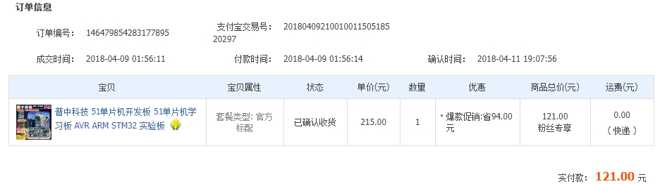

/*-----------------------------*/
意图驱动现实
我是一名偏系统方向的工程师，主要关注：
如何把人的意图，逐步转化为系统中的可执行行为。
当前关注点：
我更倾向于从工程角度出发，做一些：可以跑起来、可以验证、可以逐步扩展的系统
如果回头看我的技术路线，其实并不是一开始就规划好的，而是由一系列当下看似随机、事后却高度连贯的选择拼起来的。
平平无奇的小学初中高中生活，游戏是无聊的学习生活中唯一能让人感到兴奋的东西。在互联网并不发达的年代，买盗版游戏光盘是获得新游戏唯一的方式。盗版游戏的不稳定或是夹杂的病毒流氓软件不知道多少次让家里的 windows XP 番茄花园版崩溃，为了避免挨打我从小就练了一手装系统的技能。2010 年前后在我那个西北小县城，找电脑店装一次要 50 元，以至于后来邻居家的电脑一有问题也来找我。后来家里终于通网了，2Mbps 的 ADSL 向我灌输着各种和游戏相关的电脑知识，比如：为了和同学联机打红警去给电脑配网；我的世界(Minecraft)比较火的那段时间，自己搭了个游戏服务器；穿越火线有个 4 人的挑战模式，有段时间可以用 CE 修改器把 4 人房间改成 32 人…(这个做的有点过分了😂)。这些事情当时并不被当作“学习”，现在想想，这些实践可能就是对我计算机学习的一些最初的启蒙吧。
我来到南京读大学，父母为我选择了电气工程及其自动化专业，一个看起来“未来已经被规划好”的专业方向（供电局）。进入大学后一切都是新鲜的，我加入了学院学生会的宣传部(伏笔)。入学第一年除了数学物理基础课，居然大一上就开了 C 语言课。但是谭浩强的书和面向考试学习的编程把人折磨的不轻，诸如手算 i++ + ++i 之类的。
国庆过完，学生会换届，我成为了宣传部部长，正好我们学院举行机器人大赛，我负责拍照、写稿。当时举着相机，看着别人做的小车能自己跑起来，第一次产生了非常强烈的震撼感：把一个东西“做出来”，而且真的能动、能跑，是一件非常有成就感的事情。一些种子，也是在那时候埋下的。
大二下学期开了模拟电子技术和数字电子技术课程。在某一天的晚上，“想做点什么东西”的想法越来越强烈，也可能是网易云音乐听多了的年轻人日常深夜 emo ，但是在行动上我迈出了重要的一步：斥巨资(RMB 121.00，约等于 3 次 KFC)买了一个 51 单片机的开发板。这么多年过去了，我仍然觉得这是我最成功的一次深夜激情购物(2018/04/09-01:56)。

现在回头看，那是我技术路线中一个非常关键的节点。那时的我并不理解“架构”“抽象”“可维护性”，唯一的目标只有一个：让它跑起来。当时第一个完整做出来的东西是电子秤：应变片检测形变量，经 ADC 转换，结果显示在 LCD1602 上。代码并不是我完整写的，而是下载别人的工程，调通、改动、理解。在这个基础上，我觉得“自己行了”，可以参加学校的机器人比赛了，于是激情下单 STM32 开发板。对一个 51 都用的不是很顺畅的人来说，直接用 STM32 还是没那么容易的。虽然也磕磕绊绊的自己搞出了一个东西，但是比赛的结果只是拿了江苏省三等奖。现在回头看，那时候完全是靠一腔热血，代码是典型的新手风格，最多只能算是“会用单个外设”。但这仍然算是一个比较好的开始。
因为前面的经验，我获得了参加全国大学生智能车汽车竞赛的资格。比赛指定使用 NXP 芯片，不幸的是换了平台，幸运的是有官方源码可参考。硬着头皮去读那些明显出自多年经验工程师之手的代码，反而学到了很多东西。芯片在变，复杂度在上升，但真正发生变化的是我的关注点：为了实现一个控制效果，芯片是载体，核心是控制算法。外设、RTOS、调度、算法，本质上是在为“系统行为”服务。
同年，智能车竞赛结束后，正好赶上了电子设计竞赛。电赛是综合的考验，几天的时间要快速的出方案，验证，迭代。我和队友的一起努力让我们的作品有着还不错的性能，一度闯入国赛进入总测评争夺全国一等奖，但是在总测评的时候坏掉了，这是整个本科阶段唯一一个比较遗憾的事情，本可以但没做到。
本科毕业后，我进入一家小公司做单板软硬件开发，偏物联网方向，第一次在真实项目中使用 FreeRTOS。也是在这时，我非常清晰地感受到：“能写代码”和“能设计系统”之间，隔着一道非常明显的鸿沟。我开始认真思考职业路径，逐渐发现嵌入式开发的一条常见路线：从 STM32 出发，走向 Linux 和更复杂的软件系统。于是我开始有意识地补计算机基础，这一步对我来说意义很大。
新冠 1 年，各种形势都很严峻，在不知道未来该干什么的情况下或许先考研看看，于是考了控制专业。但是看过职业规划，觉得做嵌入式学一点计算机的知识是必要的，但是 linux 确实很劝退，于是我从我熟悉的 STM32 开始，尝试学习 RTOS，我现在感觉不幸的是：我一开始居然就对着野火的《教你手把手实现 rt-thread》开始学习，果然学习这个也很劝退。凭着一腔热血，我开始从原理入手，找了不少操作系统课程来看，第一个系统性看完的是哈工大李志军的《操作系统》。
2022 年，比较幸运考上了，考上了以后 8 月份才开学，于是前半年去一家公司实习，一开始写裸机程序，这个公司领导和同事们都很不错，当我提出想用 rt-thread 直接上项目时，领导说可以试试。这段时间是我成长最快的阶段之一。带着一点操作系统的理论基础，直接在项目中使用 RT-Thread，两三个月下来，已经可以独立设计比较复杂的业务逻辑。之后我开始反过来补原理，也是在这一阶段，看到了南京大学 JYY 的操作系统课程。这门课对我后来的系统观影响非常大，甚至可以说，是我从“会用系统”走向“理解系统”的一个关键节点。
研究生阶段重新和同学一起做机器人项目。想清楚毕业后要面对的是现实的工作选择之后，学习时间就必须做取舍。期间，继续去学习操作系统的东西，从自己最熟悉的 STM32 出发，学习 rt-thread 和操作系统原理。边学边用，研二整体相对自由，导师干预不多，我也在这段时间里做了不少“小而完整”的东西，尝试了一些新方向，顺便也赚了点零花钱。期间，因为本身是控制专业，做机器人方向，从 RTOS 到 Linux、从 MCU 到 SoC、从“写功能”到“搭系统”，这条路线几乎是自然延伸出来的。到 2024 年中，开始正式找工作，也不可避免地走了一遍“大厂路径”：背八股、刷 LeetCode。年底，工作落实，学位论文提交，研究生阶段也顺利收尾。
从学生到职场人的再次切换。毕业后的人生第一课很朴素：找工作、赚钱、对结果负责。回头看学生时代，几乎是一个“低配财富自由”的状态——父母健康、没有家庭负担、时间充裕、想法很多、衣食无忧(市中心地段的宿舍 + 一月 2000 的生活费几乎全都用来吃了)。
回头看技术史，像贝尔实验室那样的时期，总会让人产生一种错觉：几个人凑在一起，有一点想法，用代码把它们实现出来，就能改变世界。那当然和时代、资源、位置有关，但本质上，他们做的事并不复杂——把想法迅速变成可运行的东西。
有意思的是，在今天这个 AI 时代，这种“把想法落地”的门槛反而被大幅拉低了。验证一个思路是否可行，不再一定需要完整掌握所有底层细节，有时只需要一个清晰的问题，加上一点耐心，就能快速得到反馈。AI 应用是我目前在探索的方向，因为它真的降低了”把想法变成可运行的东西”的门槛。这件事从第一次让小车跑起来一样，只不过现在的工具变了。
这并不意味着努力变得廉价了，而是意味着：在精力有限的前提下，选择什么去投入，变得比”会不会”更重要。